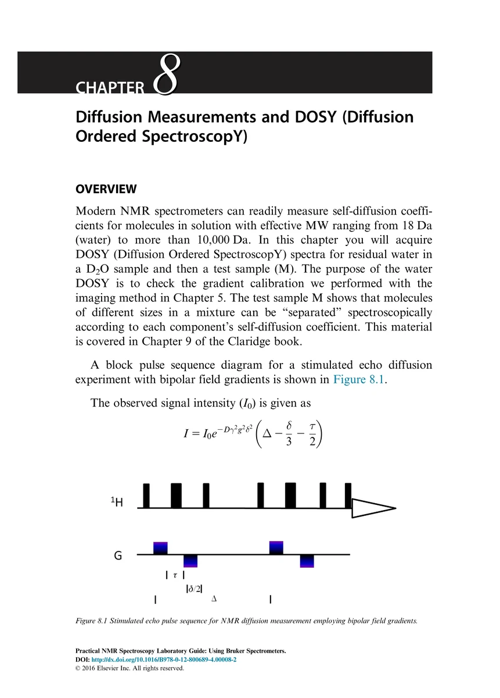
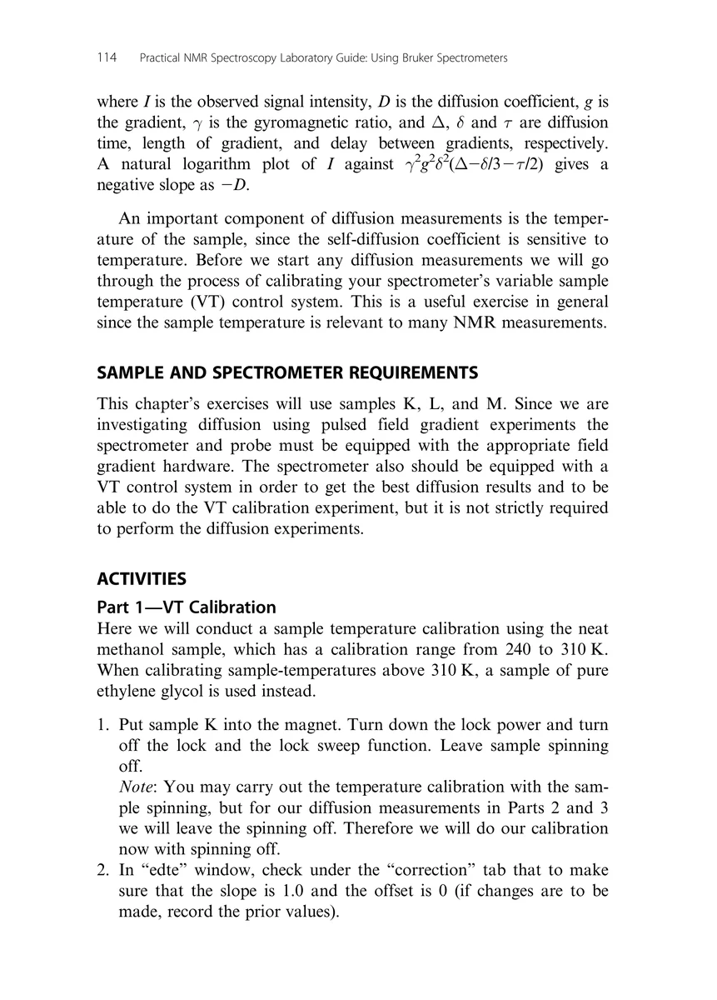
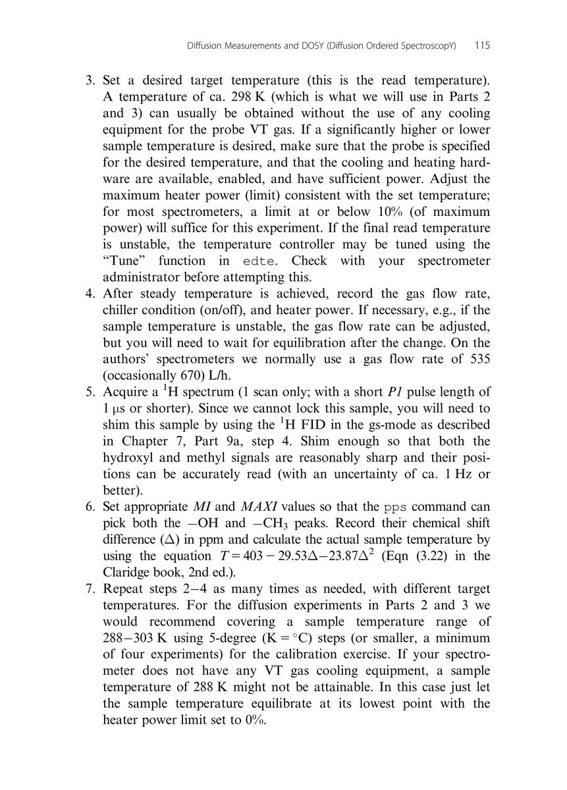
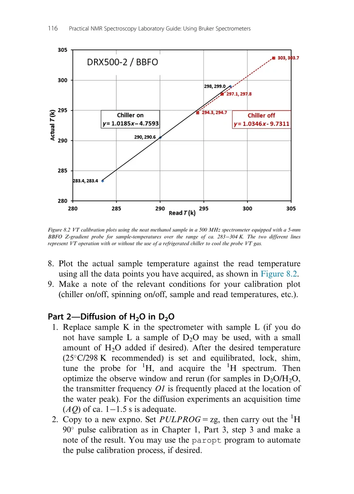
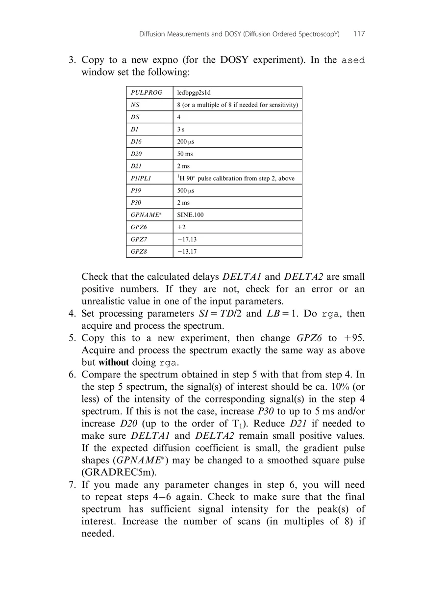
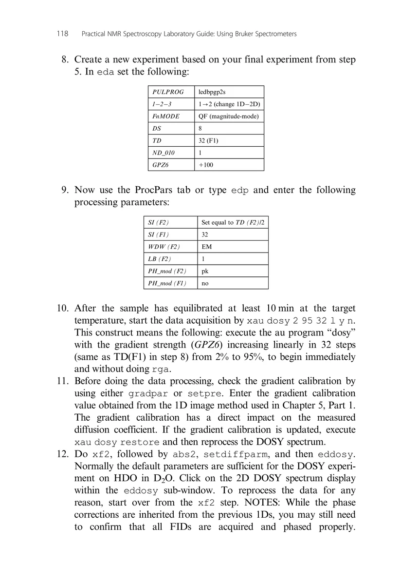
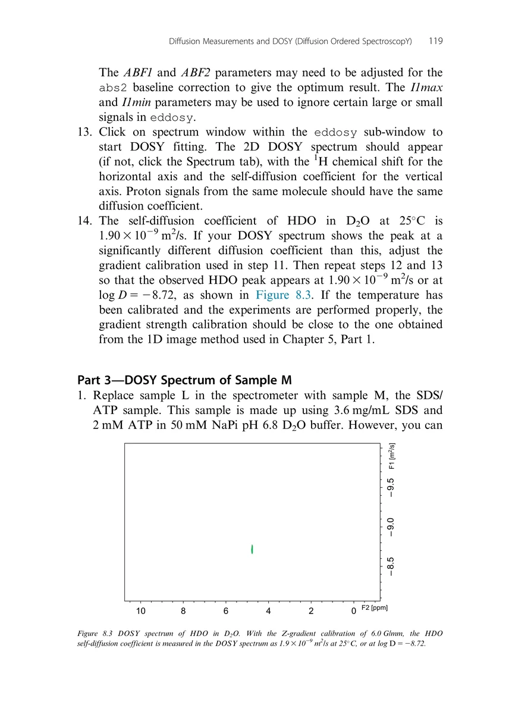
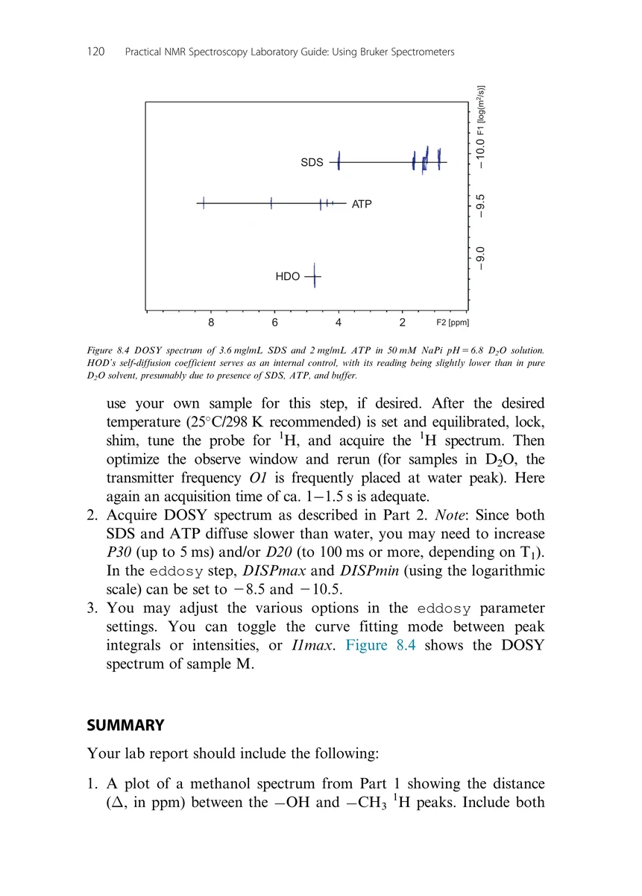
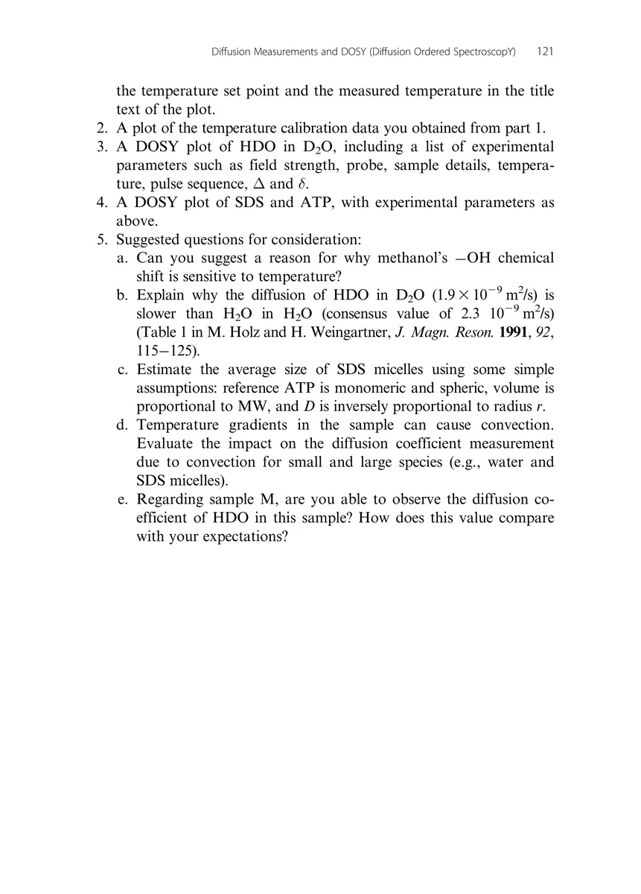

Chapter 8
Diffusion Measurements and DOSY (Diffusion Ordered SpectroscopY)
扩散测量与 DOSY（扩散有序谱）
PDF 120–128 · 原书 113–121 · Diffusion Measurements and DOSY (Diffusion Ordered SpectroscopY)








